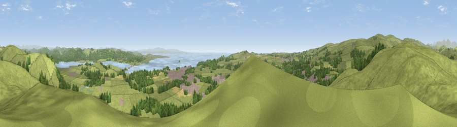

Hoad Hill
#2904 in England · top 17% of its area beats it · near UlverstonThe view, rendered

A 360° render of this exact spot computed from the terrain model, tree cover and land cover — summer colours, afternoon light, calibrated against photographs of famous viewpoints. Real trees, hedges and buildings will differ in detail.
The panorama
Grey silhouette: terrain skyline in each direction (720 bearings, Earth curvature and refraction included). Dashed green: skyline with trees (+15 m) and buildings (+8 m) as obstacles. Blue strip: how far the ground is visible on each bearing.
Where the view opens
Wedge length = distance to the farthest visible ground on that bearing (vegetation-aware). Rings at 10, 25 and 50 km.
What fills the view
57% grassland · 21% woodland · 16% built-up · 5% water · 1% cropland
Angular shares of the visible panorama (visual magnitude), not map area. Landscape diversity 0.50 (0–1 Shannon).
Key numbers
More beautiful places nearby
The staircase of upgrades: each row has a higher view potential than everything closer. Driving times are estimates from straight-line distance, calibrated against real road routing — check an actual route before setting out.
| Place | Direction | Drive | Score |
|---|---|---|---|
| Viewpoint near Pennington | W · 3 km | ~7 min | 77.1 |
| Viewpoint near Great Urswick | SSW · 5 km | ~11 min | 80.7 |
| Viewpoint near Beck Side | WNW · 5 km | ~12 min | 82.1 |
| Viewpoint near Soutergate | W · 6 km | ~12 min | 83.6 |
| Viewpoint near Cartmel | E · 6 km | ~13 min | 87.2 |
| Viewpoint near Finsthwaite | NE · 13 km | ~25 min | 90.3 |
| The Knoll | S · 392 km | ~376 min | 91.0 |
54.20244, -3.08245 · source: osm viewpoint · position refined by local search. Computed location — check access rights before visiting.